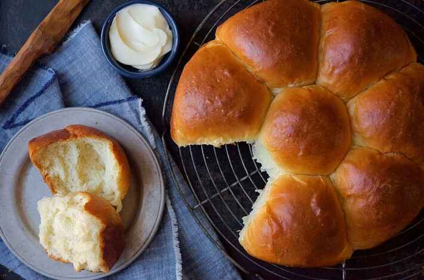

Also referred to as Hokkaido milk bread, these rolls are incredibly soft and airy thanks to a simple technique involving a roux "starter," known as tangzhong. The roux is mixed into the final dough, producing wonderfully soft, tender bread.
This recipe was one of the first ones I tried this summer and will give you foolproof bread every time. Just be prepared to knead--the first time I made it, it took over an hour and my arms were sore the next day!
With origins in Japan's yukone (or yudane), tangzhong is a yeast bread technique popularized across Asia by Chinese cookbook author Yvonne Chen. Tangzhong involves cooking some of a bread recipe’s flour in liquid prior to adding it to the remaining dough ingredients. Bringing the temperature of the flour and liquid to 65°C (149°F) pre-gelatinizes the flour’s starches, which makes them more able to retain liquid — thus enhancing the resulting loaf’s softness and shelf life.
To make a loaf: After the dough's initial rise, divide it into four equal pieces. Flatten each piece into a rectangle, then fold the short ends in towards one another like a letter. Flatten the folded pieces into rectangles again and, starting with a short end, roll them each into a log. Place the logs in a row of four — seam side down and side by side — in a lightly greased 9" x 5" loaf pan. Cover the loaf and allow it to rest/rise for 40 to 50 minutes, until puffy. Brush the loaf with milk or egg wash and bake at 350°F for about 30 minutes, until golden brown on top and a digital thermometer inserted into the center of the loaf reads at least 190°F. Remove the loaf from the oven, and cool it on a rack.
This soft dough lends itself beautifully to fried doughnuts. After the dough has risen once, hop on over to our Yeast-Raised Doughnuts recipe and start at step #3 to see how it's done.